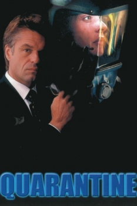

Country:United States, 86 minutes
Spoken languages:
Genres:Thriller, Sci-Fi, Sci-Fi
Director(s):Chuck Bowman
Writer(s):
Video Codec:Unknown
Number: 1674


Certification:NR
Storyline:
The president of the United States declares a state of emergency after a deadly virus developed as a bio-weapon is accidentally released across the globe.
Cast:
Medium: Original DVD,
Comments: Part of: Bio-Horror - 4 Movies
Loaned: No
Aspect ratio: Unknown